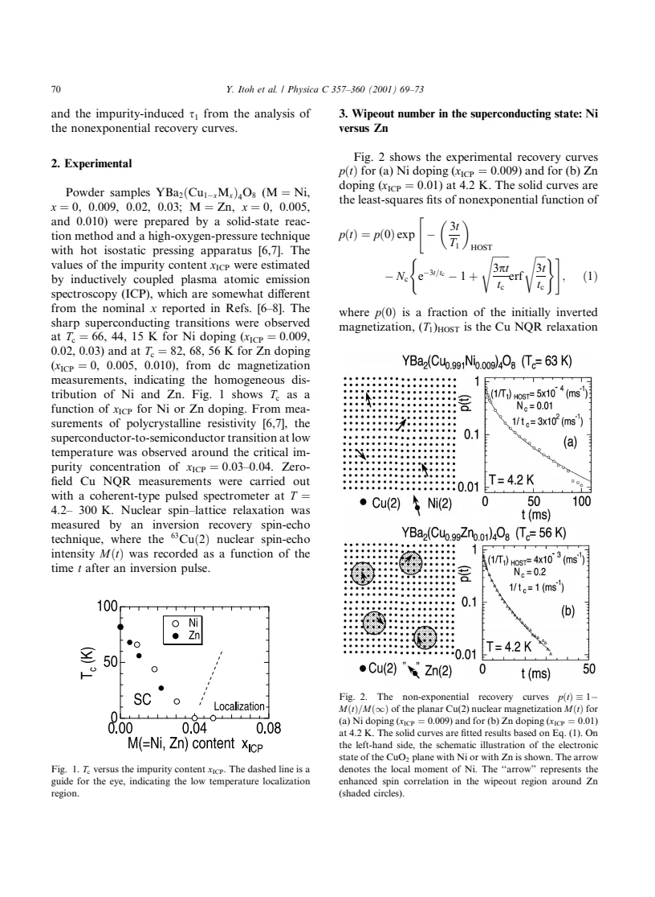
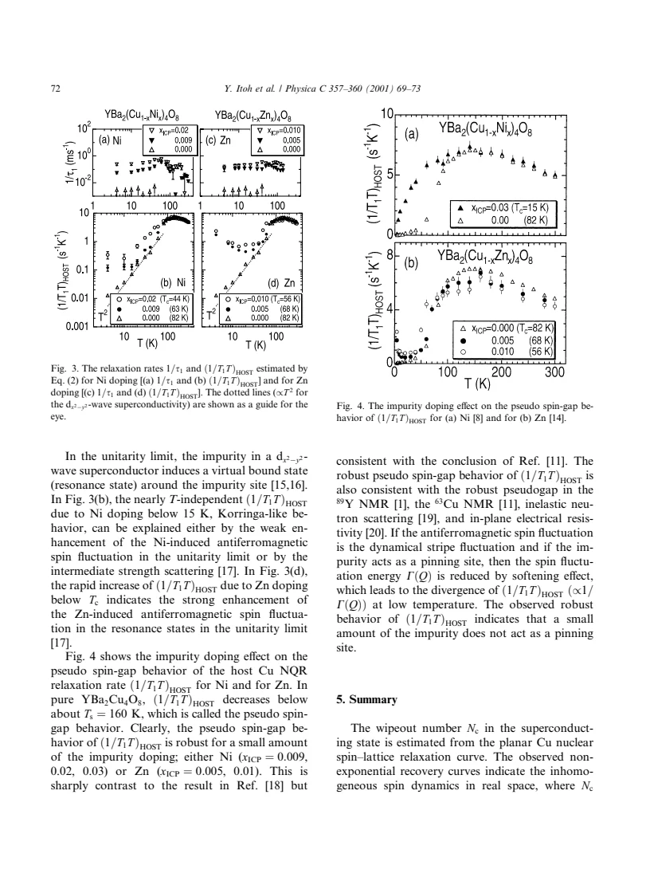

experiment · Itoh · supplied source 2001
Cu NQR study of host and guest spin dynamics in impurity-doped YBa2Cu4O8
The supplied 2001 Cu NQR study separates host and impurity-induced recovery terms: spinless Zn causes a larger inferred wipeout region and stronger low-temperature host enhancement than magnetic Ni, while the normal-state pseudo-spin-gap remains robust at the studied small concentrations.
The question: How can a nonexponential Cu recovery distinguish an impurity's local effect from the surrounding cuprate's spin dynamics?
Before you start: the few terms you need
- NQR: zero-field nuclear resonance set by the electric field gradient
- Inversion recovery: magnetization returns toward equilibrium after a pulse
- Wipeout: nuclei become undetectable within the experiment's time window
- Korringa behavior: approximately temperature-independent 1/(T1T)
- Pseudo-spin-gap: reduced low-energy spin response on cooling, not necessarily a full spectral gap
See → explain → test
Understand it in four pictures.
Picture 1 / 4
Distinguish ion spin from host response
Look for: Ni has a nominal spin-one local moment; Zn is nominally spinless but can induce moments in neighboring Cu environments.
Swipe across the picture to read every label, or enlarge it below.
- Ni impurity
- Zn impurity
Teaching source comparison. It does not claim an experimentally imaged Zn spin texture.
An impurity's own spin does not rank the size of its effect on a correlated host.
Picture 2 / 4
Fit the whole recovery function
Look for: The host exponential and impurity square-root-in-time term enter the same measured Cu recovery.
Swipe across the picture to read every label, or enlarge it below.
- Invert planar Cu magnetization
- Record Cu recovery
- Fit host + impurity terms
- Compare their temperature trends
Teaching workflow. Guest means impurity-induced Cu relaxation, not a direct Zn resonance.
Host and guest rates are distinct parameters; neither is simply the inverse of one visibly fitted decay time.
Picture 3 / 4
Account for nuclei that vanish
Look for: Very rapidly relaxing Cu nuclei near an impurity can escape the detectable echo.
Swipe across the picture to read every label, or enlarge it below.
- All Cu nuclei
- Detectable Cu echo
- Model-dependent exclusion region
Teaching detectability schematic. Below Tc, Meissner shielding prevents a direct conversion of missing integrated intensity into wipeout fraction.
The inferred exclusion region is larger around Zn, but raw integrated intensity below Tc also contains shielding effects.
Picture 4 / 4
Compare two temperature windows
Look for: The normal-state pseudo-spin-gap survives small impurity concentrations, while Zn changes the low-temperature superconducting host response.
Swipe across the picture to read every label, or enlarge it below.
- Normal-state host response
- Low-temperature host response
Teaching separation of temperature windows; no reconstructed rate points or universal impurity phase diagram.
Robust behavior above Tc and a strong change below Tc can coexist.
Predict before revealing
Ni and Zn have impurity-induced 1/τ1 of similar order at low T, but Zn's host 1/(T1T) grows much more strongly. What should be concluded?
Choose an answer, then compare the reasoning.
The nonexponential fit separates the intrinsic host term from impurity-induced Cu relaxation. Their temperature dependences need not match.
Read the answer
The guest fit parameter alone does not determine the host response The nonexponential fit separates the intrinsic host term from impurity-induced Cu relaxation. Their temperature dependences need not match.
Go deeper Follow the full argument
Why a spinless impurity is not necessarily weak
Itoh and colleagues compare Ni and Zn substitutions in YBa2Cu4O8, often called Y124. Ni is described as a magnetic 3d8, spin-one impurity, whereas Zn is a spinless 3d10 defect. In a correlated CuO2 plane, removing a magnetic site can reorganize the neighboring spins, so this atomic comparison does not determine the eventual magnetic response. Powder samples have impurity contents measured by ICP spectroscopy, which differ somewhat from earlier nominal concentrations. The studied measured fractions are Ni0.009,0.02 and 0.03, and Zn0.005 and 0.010, alongside the pure material. Zero-field planar 63Cu(2) NQR recovery is measured from 4.2 to300 K. Thus the observed signal is from host Cu nuclei experiencing both intrinsic and impurity-induced fluctuations; the word 'guest' does not refer to a Zn nuclear relaxation measurement.
A nonexponential recovery is useful spatial information
The measured quantity p(t) is the fraction of magnetization still unrecovered after an inversion pulse. It is not described by one simple exponential once impurities create a distribution of local relaxation strengths. The model assumes randomly positioned impurity centers whose contribution to a nucleus's local rate decreases with distance. A homogeneous host term and an impurity-dependent term then multiply in the recovery function. The finite-exclusion model additionally removes nuclei within a radius rc because they relax too rapidly to appear in the NQR experiment. Its fitted Nc is an inferred excluded fraction, not a directly counted map of individual Cu sites. A successful recovery fit indicates inhomogeneous dynamics within this model; it does not uniquely establish the microscopic origin or exact shape of the impurity's spin environment.
Wipeout estimates and their important detection limit
At4.2 K the finite-exclusion fits imply a substantially larger region around Zn than around Ni. The source estimates roughly 10–20 excluded unit cells per Zn at the stated in-plane concentrations, compared with roughly one per Ni. Converting that fraction into a radius depends on whether the region is circular, square or counted along a diagonal; the resulting Zn lengths are a few lattice constants, comparable to cited AF correlation-length estimates. Those geometric choices are not interchangeable measurements of one exact radius. Below Tc, integrated NQR intensity also changes because of Meissner shielding, even in powder. The authors therefore estimate Nc from recovery fitting rather than simply equating missing intensity with vanished sites. Their magnetic-vortex or Skyrmion analogy is an interpretation of a possible texture, not a directly resolved real-space spin image.
Do not carry a problematic fit unchanged through Tc
The finite-Nc formula reproduces Zn's low-temperature recovery better, but overestimates Nc above Tc, partly because the underlying spatial approximation treats the mean impurity separation as effectively infinite. For temperature-dependent rate analysis the authors instead use the limiting recovery expression with Nc fixed to zero and a finite square-root-in-time impurity parameter 1/τ1. This is a change of fitting policy, not a claim that Zn physically has no exclusion region. The resulting impurity-induced rates level off at low temperature and are of comparable order for Ni and Zn. The fitted host 1/(T1T), however, behaves differently: Ni is nearly temperature independent below about 15 K, while Zn grows rapidly within the superconducting state. Comparing only the guest term would miss the paper's central host-response distinction.
Separate the robust pseudo-spin-gap from a proposed mechanism
In the normal state, the host 1/(T1T) falls below a scale Ts of about 160 K in pure Y124. That behavior remains robust for the small Ni and Zn amounts examined, even while superconducting transition temperatures change. It does not imply that every pseudogap property is impurity independent at all concentrations. The source interprets Zn's low-temperature non-Korringa host enhancement using stronger AF fluctuations associated with a resonance state in a d-wave superconductor; Ni is discussed in terms of weaker enhancement or intermediate scattering. These microscopic explanations go beyond the directly fitted rates. A final conditional argument says that if the relevant dynamics were stripes and these impurities pinned them by softening their fluctuation energy, a low-temperature divergence should follow. The observed robust normal-state behavior challenges that particular pinning scenario; it does not directly test every form of static stripe order.
Translate the mathematics Key equations and symbol meanings
p(t) = 1 − M(t)/M(∞)
Symbols: M(t): measured planar Cu magnetization a time t after inversion; M(∞): equilibrium magnetization; p(0): initial unrecovered fraction.
The paper plots the unrecovered fraction. Its decay becomes nonexponential in impurity-doped samples.
p(t) = p(0) exp[−3t/(T1)HOST − Nc{exp(−3t/tc) − 1 + √(3πt/tc) erf(√(3t/tc))}]
Symbols: (T1)HOST: homogeneous host relaxation time; Nc: excluded fraction parameter,0≤Nc≤1; tc: impurity-induced local relaxation time at exclusion radius rc; erf: error function.
Source Eq.(1) models a finite excluded region and a spatial distribution of impurity rates. The NQR factor 3 belongs to this recovery convention. Fitted Nc is not a direct raw-intensity count.
p(t) = p(0) exp[−3t/(T1)HOST − √(3t/τ1)]; 1/τ1 = πNc²/tc in the limiting combination
Symbols: τ1: impurity-induced Cu relaxation parameter in the limiting fit; the limit takes rc→0, Nc→0 and 1/tc→∞ while retaining the combination πNc²/tc.
Source Eq.(2) separates a host exponential from a distributed impurity term. It is not a sum of two simple exponential recoveries. This fit is used for temperature trends because the finite-Nc model overestimates Nc above Tc.
T1,imp(r) = r^(2d)/Cim; tc = rc^(2d)/Cim
Symbols: r: distance from impurity; d: spatial dimension in the model; Cim: impurity magnetic autocorrelation parameter; rc: exclusion radius.
A nearby Cu can relax much faster than a distant Cu. This model assumption generates a distribution of local rates and the nonexponential recovery.
Read the evidence A guided look at the original figures

Open the full original page ↗
Open the full original page ↗

Open the full original page ↗
Open the full original page ↗
What this paper does—and does not—establish
- Historical 2001 source; fitted spatial regions and microscopic scattering mechanisms remain model dependent.
- Recovery probes detected Cu nuclei; directly lost nuclei and integrated intensity require detection and shielding corrections.
- Finite-Nc and limiting fits have different roles; host 1/(T1T) and impurity-induced 1/τ1 must remain separate.
- The Ni0.009 sample's Tc is66 K in experimental prose but 63 K in figure labels; preserve the concentration and avoid assigning unwarranted precision.
Explain it back.
Try answering aloud before opening the explanation.
Why can spinless Zn have a strong magnetic effect?
It can reorganize and enhance surrounding host Cu moments and fluctuations despite carrying no nominal local spin itself.
Why not read Nc directly from missing integrated NQR intensity below Tc?
Meissner shielding also alters the detected intensity, so the paper uses a recovery-model estimate.
Does fixing Nc=0 for the temperature-trend fit prove that wipeout is absent?
No. It is a limiting fitting policy used because the finite-exclusion formula overestimates Nc above Tc.
Which normal-state scale is reported as robust?
The host pseudo-spin-gap onset around Ts160 K for the small studied Ni/Zn concentrations, not every property at arbitrary impurity content.
Connect the next paper.
Source version, reading coverage and preservation
All five pages read using decoded /C-number extraction; rendered pages 1–4 inspected, equations and definitions checked at full size on pages 2–3 and conclusion on page 5 read visually.
Reviewed body pages: 1, 2, 3, 4, 5. Referenced scattering calculations, impurity-relaxation derivations and comparison experiments not independently re-read.
Original file retained byte for byte. SHA-256: ef6b8b700b69eeba9145176cd63f5c97d54c38b67ca986d6c99c465cee3b42e5
Filename: PhysicaC - Itoh - Host and guest spin dynamics in impurity-doped Y124 - 2001.pdf.